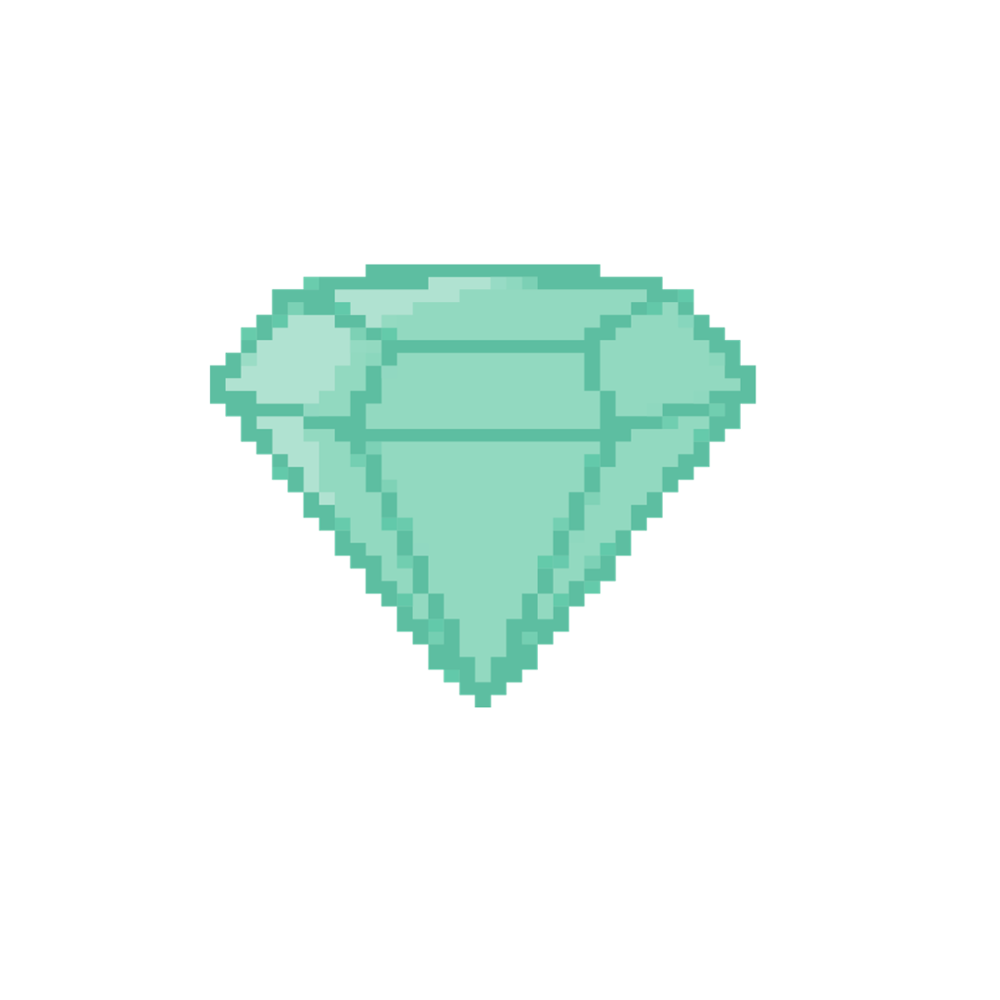
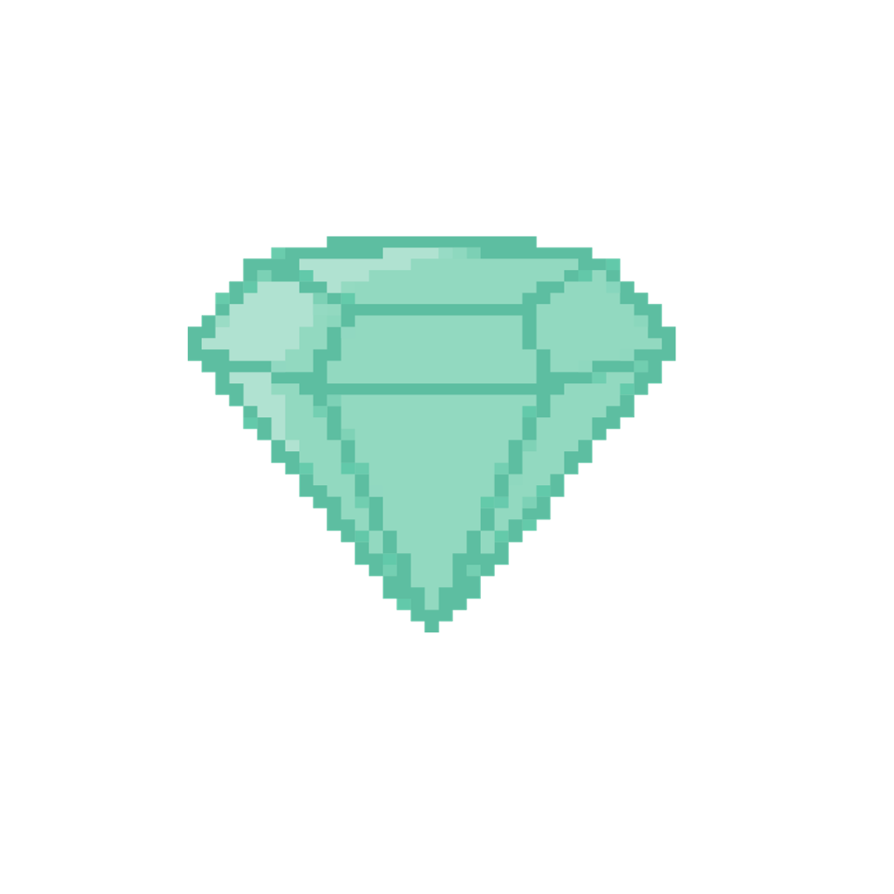

Liora decide pegar a joia e examiná-la de perto. A joia revela um mapa com símbolos misteriosos que apontam para dois destinos. Ela tenta desvendar os símbolos misteriosos do mapa, mas não consegue, então ela pensa em procurar ajuda.
 
